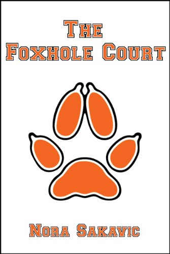
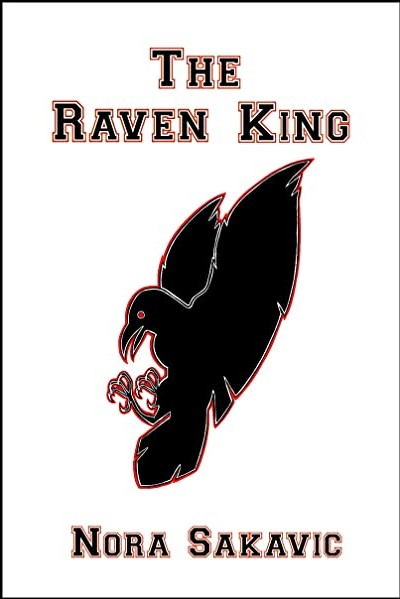

Welcome to the All For the Game Wiki
This is a wiki about Nora Sakavic's book series All For the Game, consisting of "The Foxhole Court", "The Raven King" and "The King's Men". If you have read the series, you might want to check out the author's extra content on her Tumblr.
Short Summary
The series is centered around the main character Neil Josten and a fictional sport called Exy, which is "a bastard sport, an evolved sort of lacrosse on a soccer-sized court with the violence of ice hockey". He gets signed on by Palmetto State University to play Exy, where he meets someone from his old life. And as it turns out, Neil isn't the only one with a bit of damage. Books in the series include:
 